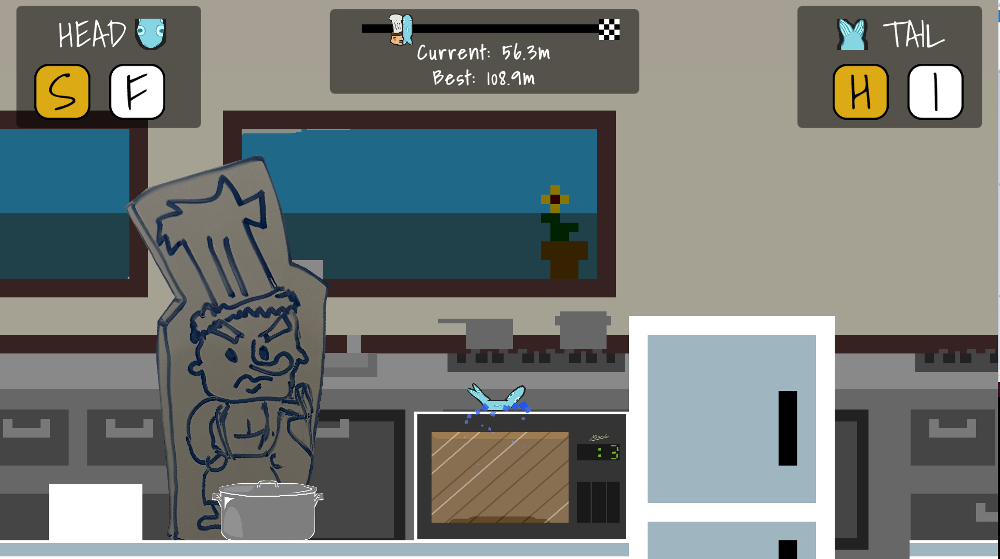
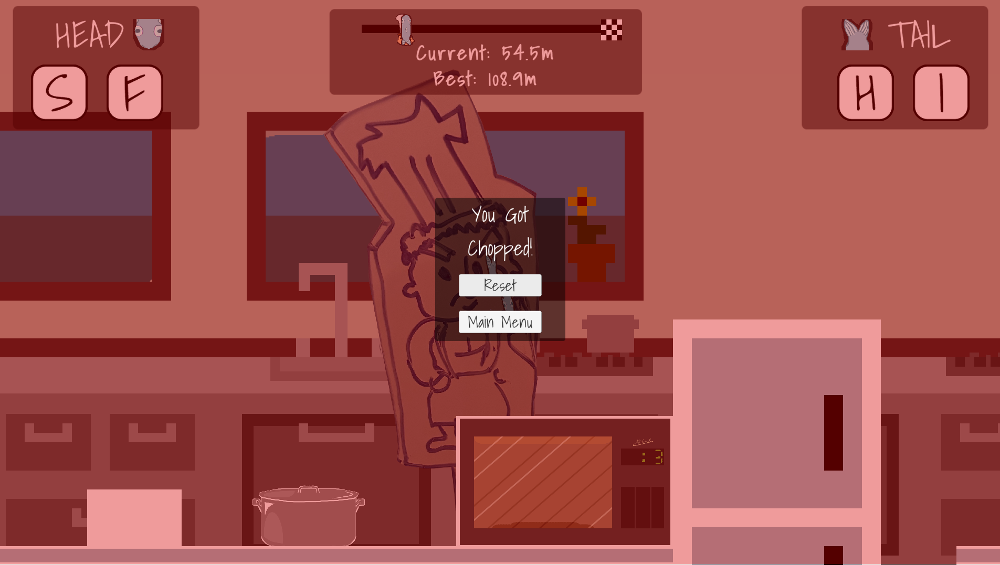

Overview
Gameplay Programmer | Level Designer
GMTK Game Jam: July 2023 (Unity Engine; Team of 3)
“F.I.S.H. - Fernando’s Italian Slice House” is a hilariously fishy game crafted in one day for the GMTK Game Jam influenced by the theme "Roles Reversed."
Inspired by QWOP and classic internet "rage games," F.I.S.H. has players taking the role of a desperate fish flopping to freedom using unconventional controls to navigate a perilous kitchen.
Responsibilities
- Engineered a segmented fish model with hinge joints and spring forces for authentic floppiness and movement.
- Developed intuitive yet challenging fish controls bound to the F, I, S, and H keys, including a wind-up slap propulsion mechanic.
- Designed the level with a difficulty arc portrayed through a variety of kitchen-themed obstacles and traps.
Design Philosophy
- With such a tight deadline, we honed in on a simple, QWOP-inspired premise which we expanded with additional level obstacles.
- Emphasized a progressive difficulty curve, slowly introducing players to stage gimmicks before ramping up the challenge.
- Incorporated humorous fail-cases and interactive physics objects to reward exploration and risk-taking.
Team Collaboration
- Utilized a structured hourly plan for development, allowing for efficient progress within our single-day production cycle.
- Prioritized tasks using a bucket system, prioritizing and delegating features and bug-fixes to maintain a focus on the game's core fun factor.
Project Insights
- Discovered the importance of maintaining a manageable game scope and clear communication under extreme time constraints.
- Embraced the game jam's spirit with a balance of disciplined planning and spontaneous creativity.
Media
- Link to the game on Itch.

